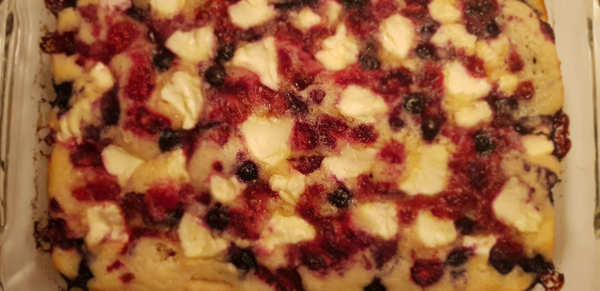

Strawberry Cream Cheese Cobbler

Description
A simple strawberry cream cheese cobbler with cream cheese and strawberries
Ingredients
- 0.5 cup butter, melted
- 1 cup milk
- 1 cup all-purpose flour
- 1 cup white sugar
- 2 teaspoons baking powder
- 0.5 teaspoon salt
- 2 cups fresh strawberry halves
- 1 (4 ounce) package cream cheese, cut into small pieces
Steps
- Preheat oven to 400 degrees F (200 degrees C).
- Pour melted butter into the bottom of a 9x13-inch glass baking dish.
- Mix milk, flour, sugar, baking powder, and salt together in a small bowl; pour over the butter in the baking dish. Arrange strawberry halves in a layer into the baking dish. Dot the strawberries with the cream cheese pieces.
- Bake in preheated oven until top is golden brown and edges are bubbling, 30 to 45 minutes.